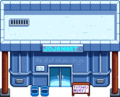

Pelikán Város

Pelikán város az a hely, ahová a játékos a játék elején költözik, Stardew Valleyben található. Pelikán város az a hely, ahol a falusiak többsége él, dolgozik és szocializálódik.
Lewis a városiak polgármestere, már több mint 20 éve; megjegyzi, hogy első polgármesteri választása óta nem volt versenytárs a szerepre.
A város északnyugati bejárata csatlakozik a buszmegállóhoz és a farmhoz. A délnyugati átjáró a Tufanedv-erdőhöz csatlakozik, amely tartalmazza a Marnie Tanyáját, illetve Leah kunyhóját és a Varázsló Tornyát. Közvetlenül a várostól délre található a strand. A várostól északra csatlakozik a Hegyekhez, ahol Robin ácsműhelye, a bányák, a Kalandorok Céhe, a Vasút és a Kőfejtő található.
Kezdetben gyomok találhatók a Fűzfa köz 2 közelében, az Fűzfa köz 1 mögötti területen, a JojaMart mögött és a Közösségi központtól nyugatra, a játszótér alatt. Ezek a gyomok télen elpusztulnak, de minden új év elején újra megnőnek.
Kulcsfontosságú helyek
| Kép | Név | Lakosok |
|---|---|---|
| Pierre Boltja | ||
 |
Klinika | |
| Közösségi központ | ||
 |
Múzeum | |

|
Kovács | |
|  | JojaMart | |
| Hullócsillag szalon | ||
 |
Könyvesbolt |
Más helyszinek
| Image | Name | Residents |
|---|---|---|
 |
Folyó Út 1 | |
 |
Lakókocsi | |
 |
Polgármester háza | |
 |
Fűzfa köz 1 | |
 |
Fűzfa köz 2 |
Mosómedve
A 3. év első nem esős napján a mosómedve megjelenik a Tufanedv-erdő déli részén. Ha elviszed a négy tárgyat amit kért, akkor egy jelenetet indít el, amelyben a mosómedve kitakarítja a szemetet a Tufanedv-erdőből, és a Lakókocsi előkertjében. illetve a Kutya karám is kap egy kis frissítést.
Gyűjtögetés

Pelikán városban a földön talált begyűjtésre alkalmas tárgyak[1]
- Tavasszal:
 Nárcisz (100%)
Nárcisz (100%) - Nyáron:
 Szagos bükköny (100%)
Szagos bükköny (100%) - Ősszel:
 Szeder (100%)
Szeder (100%) - Télen:
 Sáfrány (54%),
Sáfrány (54%),  Magyal (38%), and
Magyal (38%), and  Kristály gyümölcs (8%)
Kristály gyümölcs (8%)
A gyűjtésre alkalmas tételek átlagosan 1.2 éjszakánként tavasszal és nyáron; 0.9 éjszakánként ősszel; és télen 0.7 éjszakánként.[2] A térképen a lehetséges helyszínek piros lapkákként láthatók.
Ereklye foltok
A Pelikán Város erekjéinek kiásásával a következők találhatók ereklye foltok találhatók:
 Rozsdás kanál (4% + 6-11%[3])
Rozsdás kanál (4% + 6-11%[3]) Őskori borda (2.2-4%[3])
Őskori borda (2.2-4%[3]) Csorba amfora (3%)
Csorba amfora (3%) Ősi baba (0.8%)
Ősi baba (0.8%) Rágó bot (0.8%)
Rágó bot (0.8%) Őskori lapocka (0.7%)
Őskori lapocka (0.7%) Díszes legyező (0.6%)
Díszes legyező (0.6%) Ősi dob (0.4%)
Ősi dob (0.4%) Csont síp (0.4%)
Csont síp (0.4%).png/24px-Strange_Doll_(green).png) Furcsa baba (zöld) (0.07%)
Furcsa baba (zöld) (0.07%).png/24px-Strange_Doll_(yellow).png) Furcsa baba (sárga) (0.07%)
Furcsa baba (sárga) (0.07%)
További lehetséges tárgyak:
 Elveszett könyv (20% + 4-8%[3]); ha az összes elveszett könyvet megtalálták, az esetleges elveszett könyvek helyébe a
Elveszett könyv (20% + 4-8%[3]); ha az összes elveszett könyvet megtalálták, az esetleges elveszett könyvek helyébe a  Kevert magvak kerülnek.
Kevert magvak kerülnek.- 1-3
 Agyag (12-24%[3])
Agyag (12-24%[3]) - Csak Télen:
 Téli gyökér (21%)
Téli gyökér (21%) - Csak Télen:
 Téli yamgyökér (14%)
Téli yamgyökér (14%) - 1-3
 Réz érc (7-14%[3])
Réz érc (7-14%[3]) - 1-3
 Kő (4-8%[3])
Kő (4-8%[3]) - Csak Tavasszal: 2-5
 Rizs hajtáss (4%)
Rizs hajtáss (4%) - Egy rejtett
 Titkos jegyzet: 2.1% de csak akkor, ha a játékosnak van nagyítója.
Titkos jegyzet: 2.1% de csak akkor, ha a játékosnak van nagyítója.
Az ereklye foltok átlagosan 0,2 éjszakánként, kivéve télen, amikor az átlagos arány 0,8 éjszakára nő.[4]
Horgászás

A Pelikán városon átfolyó folyóban folyami halakat lehet fogni. Ősszel egy legendás halat, a Ördöghal lehet fogni a folyó északi végén. Miss Ördöghal, az egyik legendás hal II.
A Közösségi központtól balra lévő szökőkútban horgászatkor egy Dekoratív kukát találunk (10%-os eséllyel). Ellenkező esetben egyetlen darab fa vagy kő kerül elkapásra, egyenlő valószínűséggel (mindegyik 45% esélye).[5]
| Idő | |||||||||||||||||||||
|---|---|---|---|---|---|---|---|---|---|---|---|---|---|---|---|---|---|---|---|---|---|
| 06 | 07 | 08 | 09 | 10 | 11 | 12 | 13 | 14 | 15 | 16 | 17 | 18 | 19 | 20 | 21 | 22 | 23 | 00 | 01 | ||
| Csak napos napon | |||||||||||||||||||||
| Csak esős napon | |||||||||||||||||||||
| Csak esős napon | |||||||||||||||||||||
| 06 | 07 | 08 | 09 | 10 | 11 | 12 | 13 | 14 | 15 | 16 | 17 | 18 | 19 | 20 | 21 | 22 | 23 | 00 | 01 | ||
| Csak napos napon | |||||||||||||||||||||
| Csak napos napon | |||||||||||||||||||||
| Csak esős napon | |||||||||||||||||||||
| 06 | 07 | 08 | 09 | 10 | 11 | 12 | 13 | 14 | 15 | 16 | 17 | 18 | 19 | 20 | 21 | 22 | 23 | 00 | 01 | ||
| Csak esős napon | |||||||||||||||||||||
| Csak esős napon | |||||||||||||||||||||
| Csak esős napon | |||||||||||||||||||||
| 06 | 07 | 08 | 09 | 10 | 11 | 12 | 13 | 14 | 15 | 16 | 17 | 18 | 19 | 20 | 21 | 22 | 23 | 00 | 01 | ||
Apróság
- Pelikán város a Ferngill Köztársaságban található, akik háborúban állnak a Drágakő-tengeren túli Gotoro Birodalommal[6].
- Dr. Harvey a rövidhullámú rádióján felhívta a helyzetét (Pelikán város) 52 északra, 43,5 keletre. Így, ha a Csillagharmat-völgy van a Földön, akkor egy Krasznoje nevű falu közelében található (egy a sok közül) Oroszországban - Szaratovtól körülbelül 160 km-re (100 mérföldre) nyugatra, és körülbelül 600 km-re (375 mérföldre) DK-re Moszkvától. A "Krasnoye" jelentése "szép" vagy "piros". Ez azonban nem a tenger partján van.
- A játékos nem tudja feltölteni az öntözőkannáját a szökőkútból.
Hivatkozások
- ↑ Minden gyűjtögetésre megadott százalék az összes gyűjtögetés átlagos százalékos aránya, amely az adott szezonban meghatározott cikk lesz. A bemeneti adatLocations.xnb,amelyet a GameLocation::spawnObjects dolgoz fel.
- ↑ 13200 teljes kapacításából mindősze 870 (7%) valós hely gyűjtögetésre. Bővebben Gyűjtögetés.
- ↑ 3,0 3,1 3,2 3,3 3,4 3,5 Az évszaktól függő lehetőség, hogy extra tárgyakat találj az ereklye foltokban. A legnagyobb esély nyáron és ősszel van. Télen 50%-kal kisebb az esély; tavasszal 6%-kal kevesebb. További információért lásd: Ereklye folt.
- ↑ A Pelikánváros 13200 teljes kapacításából 891 (7%) érvényes termőhely tavasszal, nyáron és ősszel. 3036 (23%) érvényes megjelenési hely télen. További információért lásd: Ereklye folt.
- ↑ Lásd StardewValley.Locations.Town::getFish a játék kódjában
- ↑ https://twitter.com/ConcernedApe/status/697468899881652224
Előzmény
| Helyszínek | |
|---|---|
| Helyszínek | Alagút • Bányák • Boszorkány mocsár • Buszmegálló • Calico Sivatag • Csatorna • Csille • Csúcs • Farm • Farm barlang • Farm tavacska • Gyömbér-sziget • Hátsó Erdő • Hegyek • Kőfejtő • Kőfejtő bánya • Koponya-barlang • Mesterképességek barlangja • Mutáns bogár odú • Pelikán Város • Strand • Temető • Titkos Erdő • Tufanedv-erdő • Vasút • Vulkán kazamata |